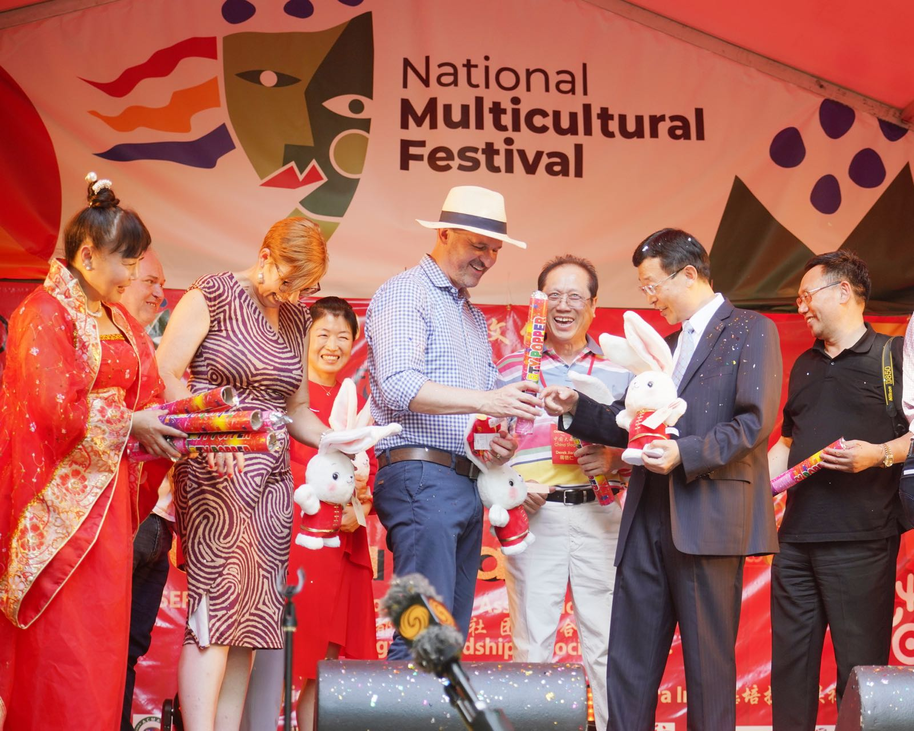
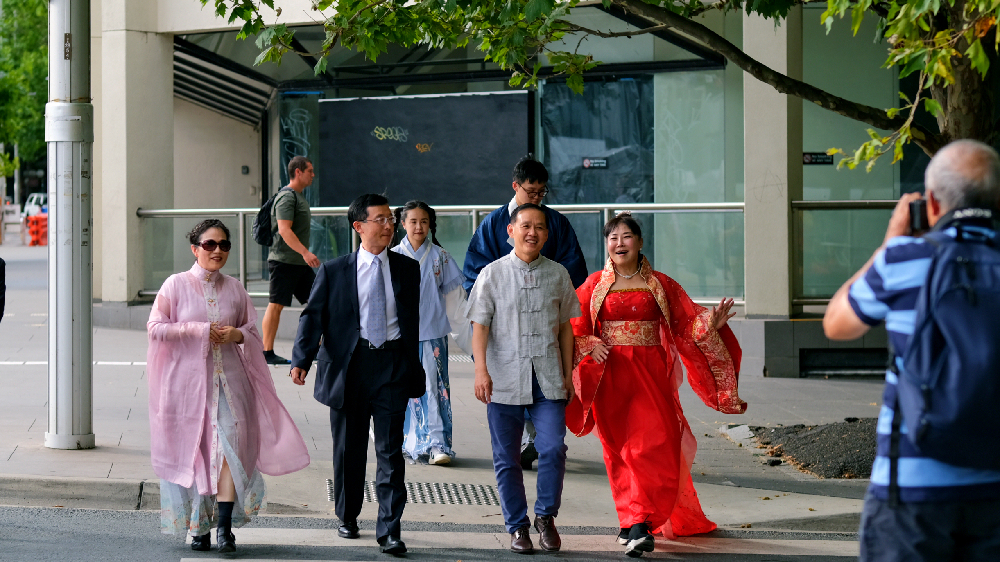
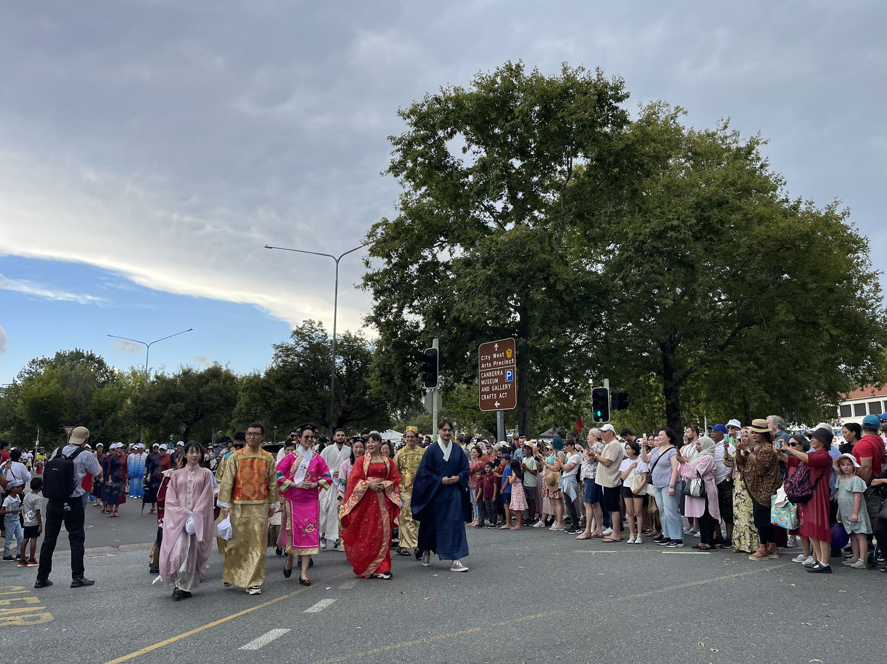
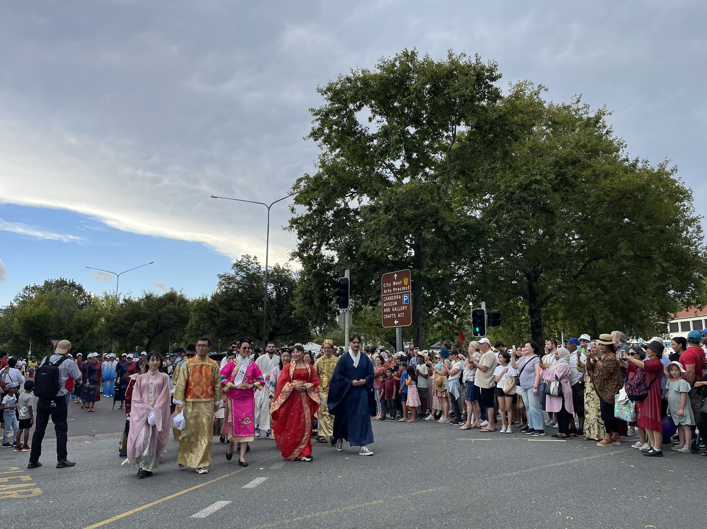

澳大利亚海外留学生关爱中心——在元宵佳节来临之际，澳大利亚海外留学生关爱中心为海内外华人华侨、海外学子，在微信公众号、堪生活、小红书，脸书，流金岁月栏目，以视频形式献上一台弘扬中华民族传统文化的艺术盛宴！ 心系祖国观冬奥、身在异国慰亲人。 中国驻澳大利亚使馆文新处，为晚会准备了丰富的礼物，松雁群公参代表使馆为晚会致词。流金岁月栏目在元宵佳节17:00为海外留学生关爱中心的元宵晚会做出特别报道。敬请观看 视频观看中、观众的点评每个栏目播出随机抽取10名，有礼物赠送、并受邀参加海外留学生关爱中心之后举行的领奖仪式，签字墙、红地毯，在海外留学生关爱中心让您找到明星的感觉！


为传播中国文化，关爱中心把推广学习中文提上日程，建立了汉语角Chinese Corner。今天是汉语角的活动日，吸引了当地及多个国家地区的留学生，新加坡、马来西亚等学生们一起学习中文。今天的主题是讲述中国的清明节与澳洲的不同之处。主要是进了汉语角，就要说中文。国度不同、文化无界。让我们架起中澳文化的友谊之桥。


澳大利亚海外留学生关爱中心—— 汉语角、汉语角、汉语角、汉语角 今天是国际中文日，虽然恰逢学生考试、这次的活动、全部由关爱中心的顾问及志愿者进行，但是活动非常成功。中国的双语书籍，深受当地学生的喜欢。大家利用午饭时间、休息时间过来助阵。 感谢顾问老师的支持。感谢驻澳中国大使馆文新处、教育处的支持。谢谢大家！


澳大利亚首都海外留学生关爱中心 —— 阔别三年之久的澳洲多元文化节、今天圆满开幕！盛况空前。 每年一度的多元文化节游行活动精彩纷呈！我们的汉语角在同学们的帮助与鼓励下、中华服饰方队的展示圆满成功！谢谢大家对中华传统传承的支持。谢谢各位关爱中心学生顾问的付出。谢谢海内外学子对中华文化的热爱。 每年一次的多元文化节、相隔三年重新开始，谢谢大家的陪伴、我们澳大利亚海外留学生关爱中心的汉语角又一次开拓了新的视角，愿我们继往开来为弘扬中华民族传统美德而坚持！祝福同学们学习进步！一切顺意!
 
 



4月二日关爱中心汉语角与澳华会互帮互助你我他小组、联合举办传播中国文化在海外活动。感谢中国驻澳使馆教育处郭参赞、冯处亲临现场的支持帮助，感谢华人联合会对学生们的厚爱，感谢各位长辈为孩子们无私的奉献。谢谢大家、辛苦了。 精彩的汉服表演、京剧艺术、舞蹈、歌曲，丰富多彩。让来自不同国家的留学生、体验汉服文化、学习包饺子。让中国文化在海外源远流长。